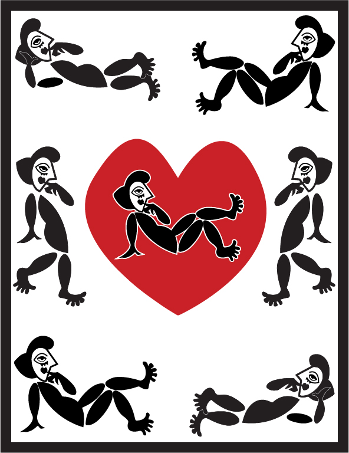
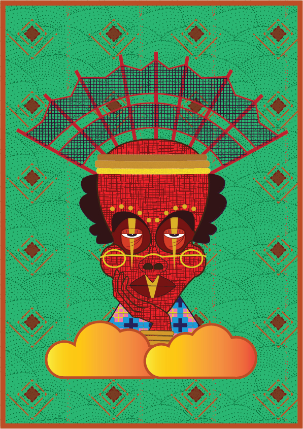
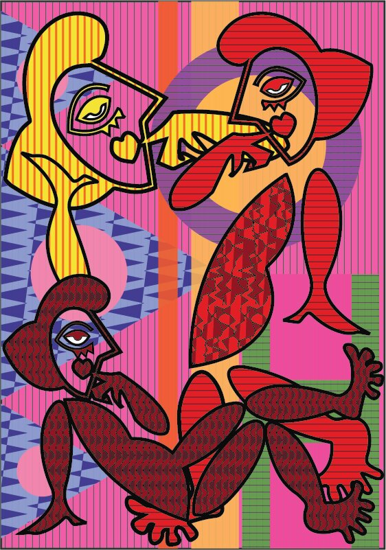
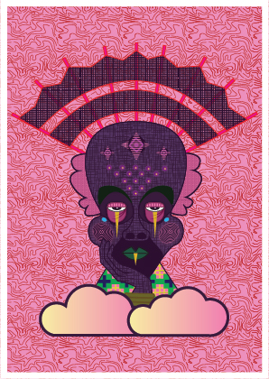
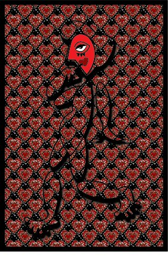
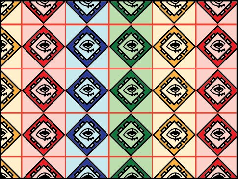

Can you tell that I like masquerades?
Well, not only masquerades but I do enjoy the creativity of playing around with different colours and imagined concepts. I will describe myself as an arts and crafts enthusiast. I do everything from crocheting to painting to digital art for fun. So here I have some of my illustrations, all done with Adobe Illustrator 🎨. Take a look around and if you like what you see, hit me up!
Art display





